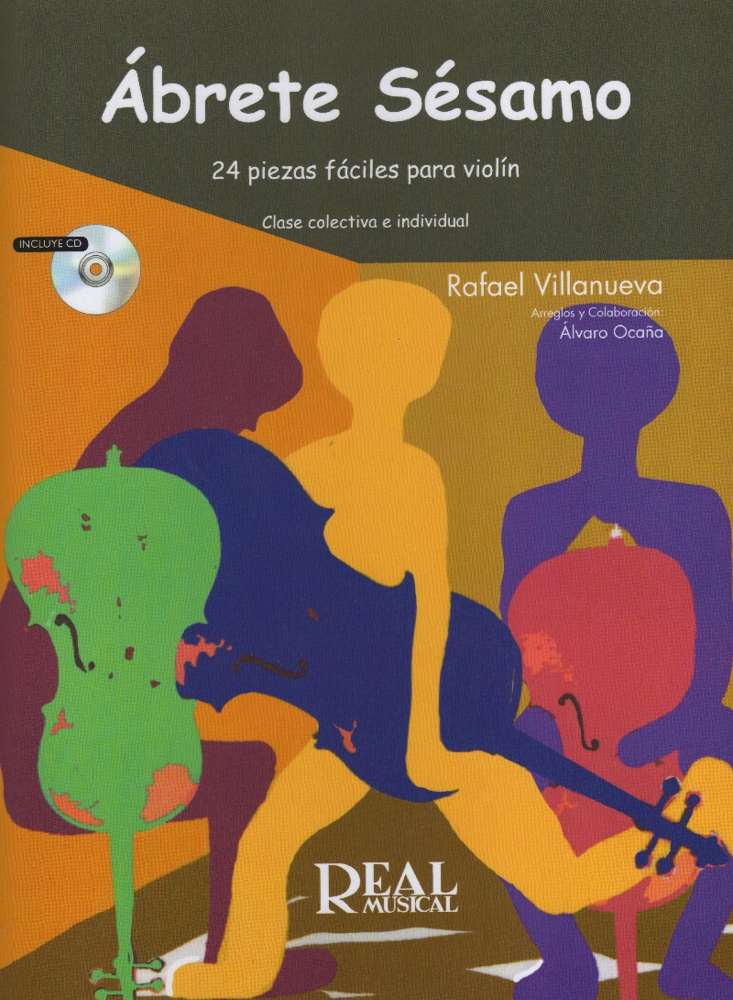
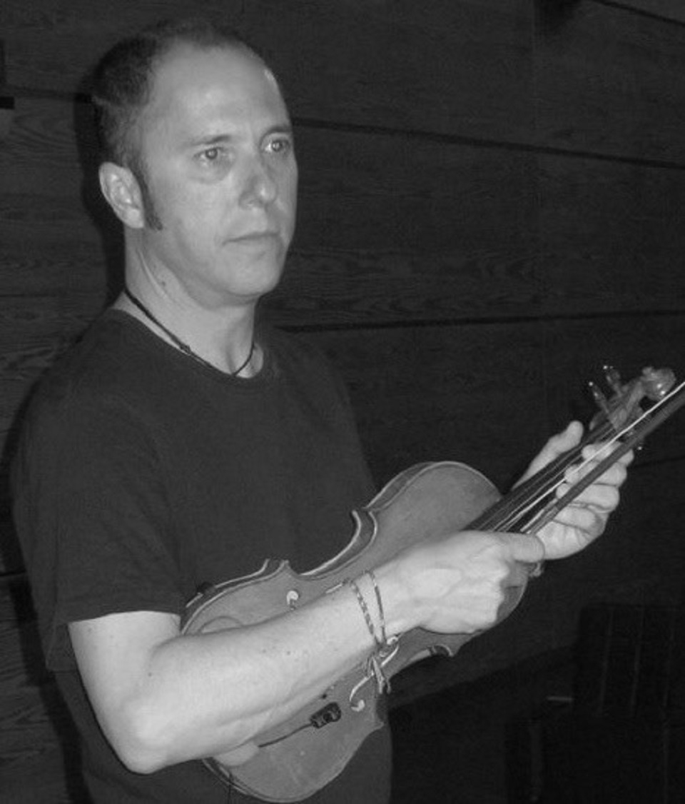

Arreglos y composiciones musicales para joven orquesta de cuerda y otras combinaciones instrumentales, de diferentes géneros, estilos y autores: Renacimiento (Juan del Enzina); Barroco (Bach, Haendel, Rameau…); siglo XIX ( Albéniz, Bruch…); siglo XX (Bela Bartok, Granados…); bandas sonoras (Titanic, La Lista de Schlinder, Juego de tronos…); obras populares (Old McDonald, Debajo de un Botón...); pop y rock (Los Beatles, Eric Clapton, Deep Purple…); música navideña (English Carols, villancicos populares españoles…).
Composiciones
Arreglos y composiciones originales ordenados por orden alfabético de autores (partitura general, partes y grabaciones realizadas con instrumentos virtuales o reales).
Se incluyen partes fáciles para violín, viola y cello, que no son indispensables, pero que posibilitan la interpretación en orquestas multinivel. También se incluye, cuando el arreglo lo permite, una parte de violín 3 que sustituye a la voz de viola.
La descarga es gratuita.
Significado de las abreviaturas:
(S.O.)…………….String orchestra
(S.O.+ E.P.)……. String orchestra con partes facilitadas (violin, viola y cello fáciles y vln3/vla)
Nivel de dificultad: (1) muy fácil, (2) fácil, (3) medio
Se incluyen otras composiciones para instrumentaciones varias.
Espero que estos arreglos y composiciones te resulten útiles.
Si quieres apoyar este proyecto, considera la posibilidad de hacer una donación.
Con tu ayuda podremos seguir manteniendo esta página de descarga libre en la que en el futuro se incluirán nuevos trabajos.
Editor: Real Musical; Edición: Real Musical (8 de junio de 2006)
Colección: RM Conjunto instrumentales
ISBN-10: 8438705952
ISBN-13: 978-8438705957
Abrete Sésamo (25 Piezas Fáciles para violín)

ÁBRETE SÉSAMO (25 Piezas Fáciles para violín) es una recopilación de obras muy conocidas tanto populares como clásicas. Cada tema se presenta de 3 formas: "Violín fácil" (sólo cuerdas al aire), "Violín 1", servirá en cursos posteriores como repertorio fácil y atractivo en 1ª posición. Estos arreglos permiten por lo tanto juntar en clases colectivas a alumnos de distintos niveles. III. Piano, acompañamiento para el profesor que incluye la melodía permitiendo así que la canción suene sin necesidad del violín principal e incluye también el cifrado de acordes para permitir el acompañamiento con otros instrumentos armónicos. Cada tema aparece grabado en el CD dos veces: Versión completa (Violín 1 y piano) y Versión minus one (Sólo piano). En el libro aparece un apéndice donde se sugieren algunos ejercicios técnicos y musicales extraídos de las propias obras para ser utilizado tanto en las clases individuales como en las colectivas.
Partitura: 68 páginas
Editor: Real Musical; Edición: Real Musical (19 de septiembre de 2011)
ISBN-10: 8438711553
ISBN-13: 978-8438711552
La enseñanza musical instrumental en la enseñanza obligatoria:
análisis de la situación actual y la clase de cuerda
como alternativa al currículo
Autor: Villanueva Liñán, Rafael
Director: Blasco García, Julio Andrés
Visualización y descargas: http://hdl.handle.net/10017/22645
Fecha: 2014
Universidad de Alcalá. Departamento de Ciencias de la Educación
Currículum
Violinista, compositor y docente. Doctor en Ciencias de la Educación por la Universidad de Alcalá. Estudios de violín en el RCSM de Madrid con Hermes Kriales, viola con Emilio Mateu, armonía con A. G. Acilu, contrapunto y fuga con D. Vega y composición y arreglos en la EMC de Madrid con R.Miralles y Eva Gancedo. Estudios de piano y guitarra. Licenciatura en Ciencias Biológicas.
Compositor de música para cortos, para una campaña publicitaria de la Comunidad de Madrid, y para danza. Arreglos musicales de la película" Los Invitados" (1988), nominada para un Goya a la mejor banda sonora. Compositor de la banda sonora de la película "Rotas" (2016) y de la música del ballet "De Amor Herido" (2016). Contrato editorial con EMI para la composición de treinta temas de pop-rock.
Publicaciones: "8 piezas fáciles para orquesta de cuerda" (Real Musical), "Ábrete sésamo 25 piezas fáciles para violín" (Carisch). Encargo con Carisch para la publicación de una antología de obras para orquesta de cuerda.
Intérprete en numerosas orquestas (Orquesta Filarmónica de Gran Canarias, Orquesta de cámara Ars Nova, Camerata del Prado,Teatro Clásico Nacional, Centro Dramático Nacional) así como en diferentes grupos de jazz, flamenco y rock. Miembro de "El Cuarteto de Alejandría". colaboraciones con Carmen Linares, Amancio Prada, Serrat, Aute, Rafael Riqueni, Enrique Morente y Joaquín Cortés, entre otros. Numerosas grabaciones discográficas y para radio y televisión.
Intérprete en las principales salas de conciertos de España (Teatro Real de Madrid, Auditorio Nacional, Palau de la Música de Barcelona, Maestranza de Sevilla, Festival de Santander, Teatro Arriaga de Bilbao, Teatre Principal de Valencia...) así como en otras salas importantes de Inglaterra, Estados Unidos, Francia, Holanda, Suecia, Alemania, Italia, Portugal, Argentina, Colombia, Venezuela, Grecia, Méjico, Noruega, Bélgica, Luxemburgo,Japón y China.
Ha sido Profesor de violín en el Real Conservatorio de música de Madrid y director de la Sección Infantil de la Orquesta Ciudad de Alcalá. Actualmente director de la Orquesta del British Council School de Madrid, profesor asociado de Didáctica Musical de la Universidad de Alcalá de Henares y profesor del Master Universitario en Educación de la Universidad Europea de Madrid en la especialidad de Música.

Contacto
Si te han resultado útiles los arreglos y composiciones o quieres sugerir alguna corrección -errare humanum est- agradeceré tus comentarios.
Si quieres apoyar este proyecto, considera la posibilidad de hacer una donación.
Con tu ayuda podremos seguir manteniendo esta página de descarga libre en la que en el futuro se incluirán nuevos trabajos.